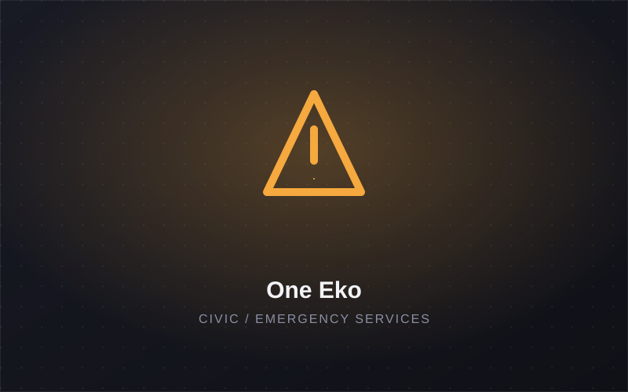
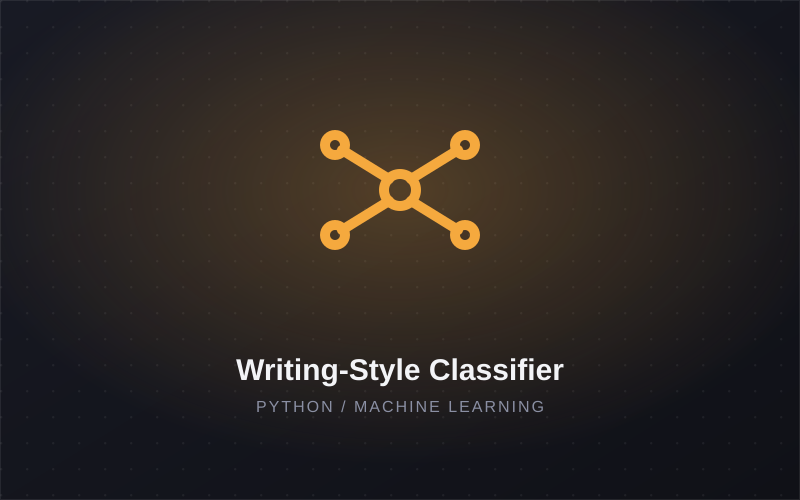
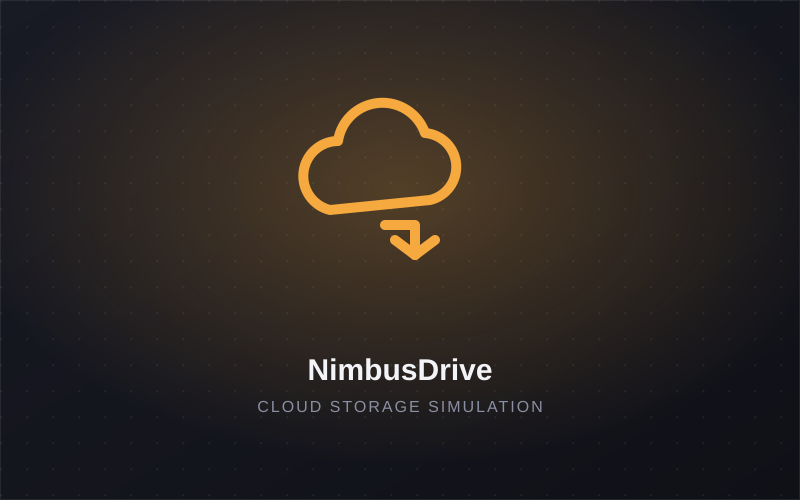

LIVE

Computer Science Student & Software Developer
I'm a Computer Science student who enjoys turning ideas into practical solutions people can actually use. I'm currently focused on building my skills in Python and Machine Learning, while also exploring Web Development and creating simple, user-friendly web interfaces. I enjoy learning new technologies, working on projects, and developing solutions that combine programming with real-world applications.
A few of the builds I'm most proud of — see the Projects page for the full showcase.


